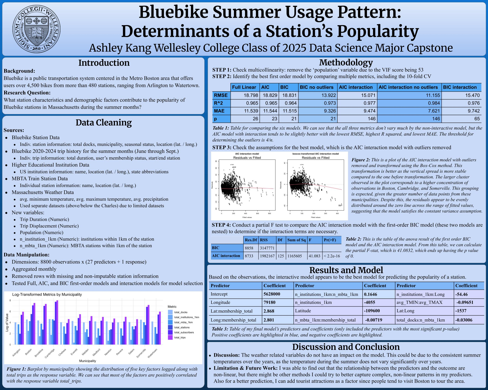

Senior Data Science Capstone Project
Bluebikes is a public transportation system in the Metro Boston area with over 4,500 bikes distributed across more than 480 stations. This research investigates how station characteristics and demographic factors contribute to usage patterns, with a focus on the popularity of Bluebike stations in Massachusetts during the summer months. The Bluebike datasets from 2020–2024 were cleaned, analyzed, and visualized as part of this project.
There were several additional datasets that I included in this project besides the original Bluebikes dataset, which was required for this analysis. One of the additions is the institution dataset, which contains information about institutions, including their names, latitudes, and longitudes. I included this dataset with the hypothesis that the number of institutions within a certain distance from a station might influence that station’s popularity compared to stations that are not near an institution.
Another dataset I included was the MBTA_NODE.shp dataset, a spatial dataset of the MBTA (Massachusetts Bay Transportation Authority) subway stations in the Greater Boston Area. It includes details such as station name, latitude, longitude, line, and route. Similar to the institution hypothesis, I hypothesized that the presence of a nearby MBTA station might affect a Bluebikes station’s popularity.
The last additional dataset I included was the weather dataset, which contains values such as precipitation, humidity, daily high and low temperatures, and snow depth. This dataset was added to explore whether station popularity shows patterns related to specific weather conditions on a given day.
Dataset
- Bluebike trips (2020–2024 summer months), station data, MBTA data, institution data, and weather data
Methods
- Data cleaning, exploratory data analysis, modeling with AIC/BIC model selection, visualization
Scale
- ~8,800 observations × 28 variables
I started the analyses by checking for multicollinearity, which led to the removal of the population variable due to its high VIF score of 53. Next, multiple first-order models were compared using several metrics, including the 10-fold cross-validation. While the non-interactive models showed little variation across metrics, the AIC model with interaction terms performed slightly better, yielding the lowest RMSE, highest R², and lowest MAE. Outliers were identified using the threshold of 4/n and subsequently removed. The best-performing model, the AIC interaction model with outliers removed, was then checked for assumptions. After applying a Box-Cox transformation, the residual spread became more stable, with clusters reflecting a higher concentration of data points from Boston, Cambridge, and Somerville. Despite this clustering, the residuals were evenly distributed around the zero line across fitted values, which satisfied the constant variance assumption. Finally, a partial F-test was conducted to compare the nested AIC interaction model with the first-order BIC model to evaluate the necessity of interaction terms. The test yielded a partial F-statistic of 41.0832 with a p-value of 0, confirming the significance of the interaction effects.
Based on the observations, the interactive model was identified as the best model for predicting the popularity of Bluebike stations. The results table highlights only the most significant predictors. Notably, both longitude and latitude were found to have positive coefficients, indicating that station location plays a major role in driving usage. These findings suggest that geographic placement, particularly proximity to dense urban centers like Boston, Cambridge, and Somerville, has a strong influence on station popularity.
